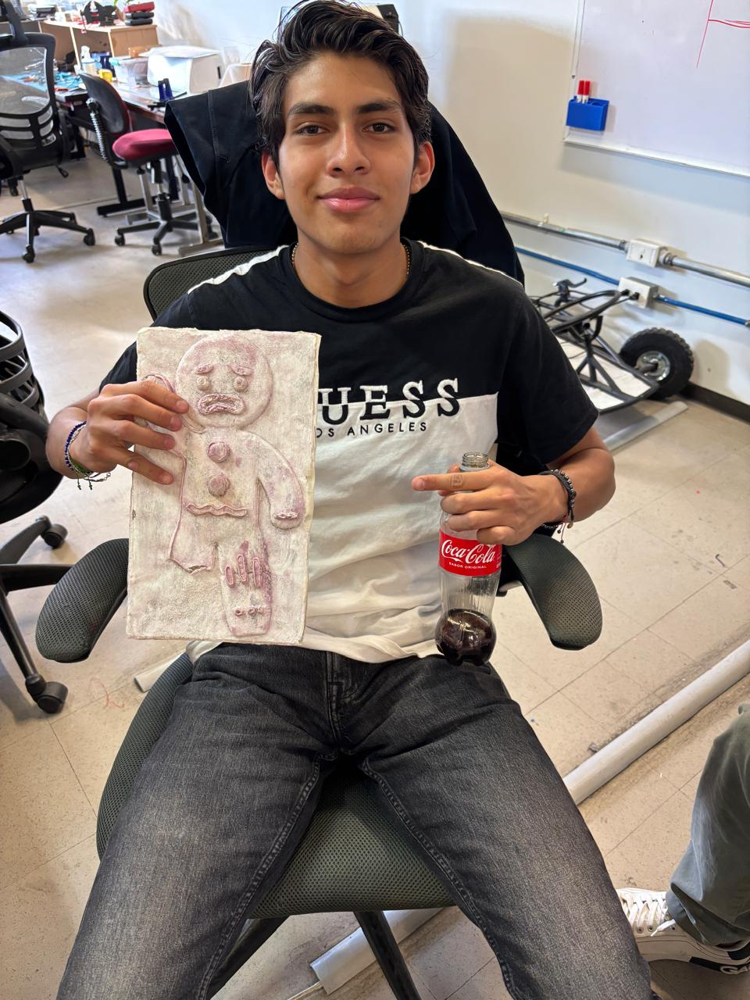
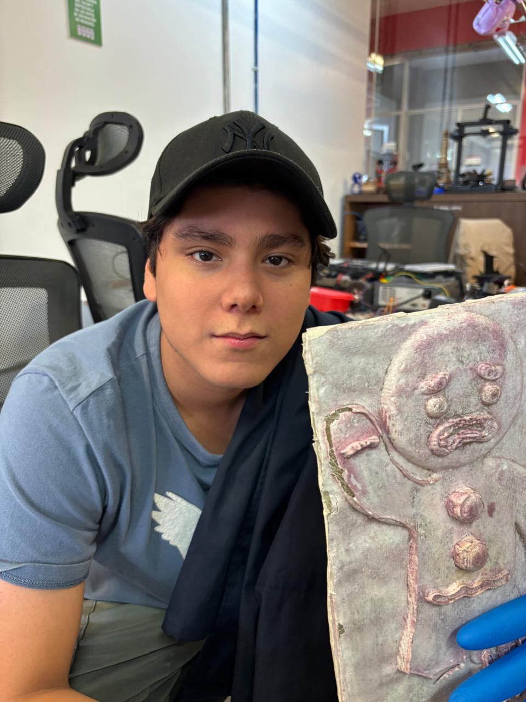
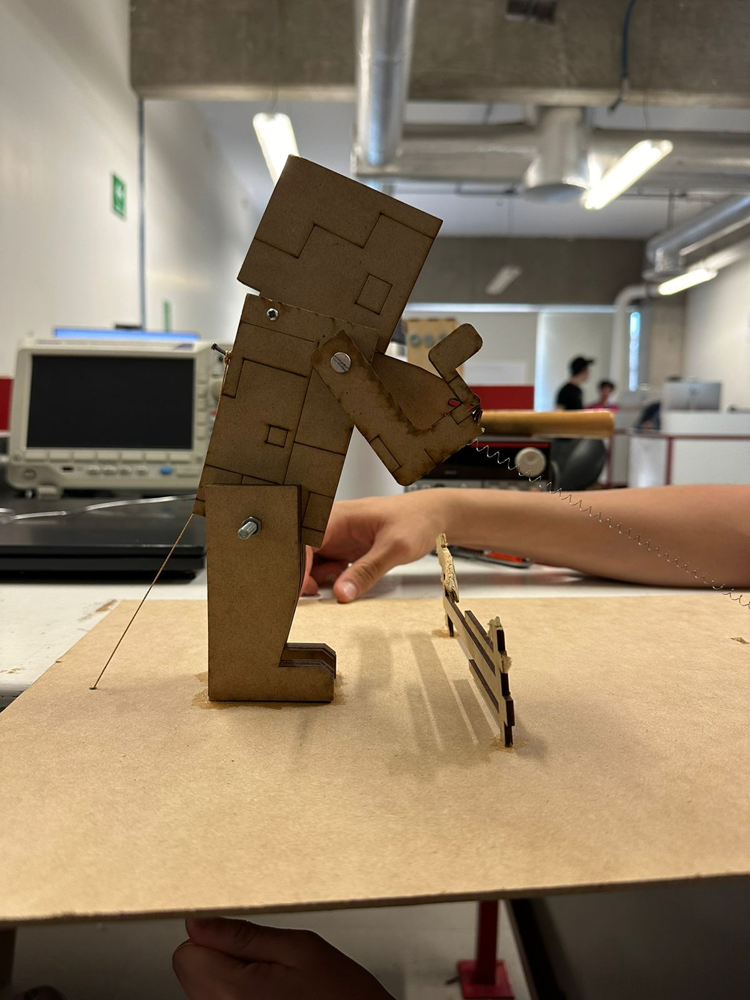
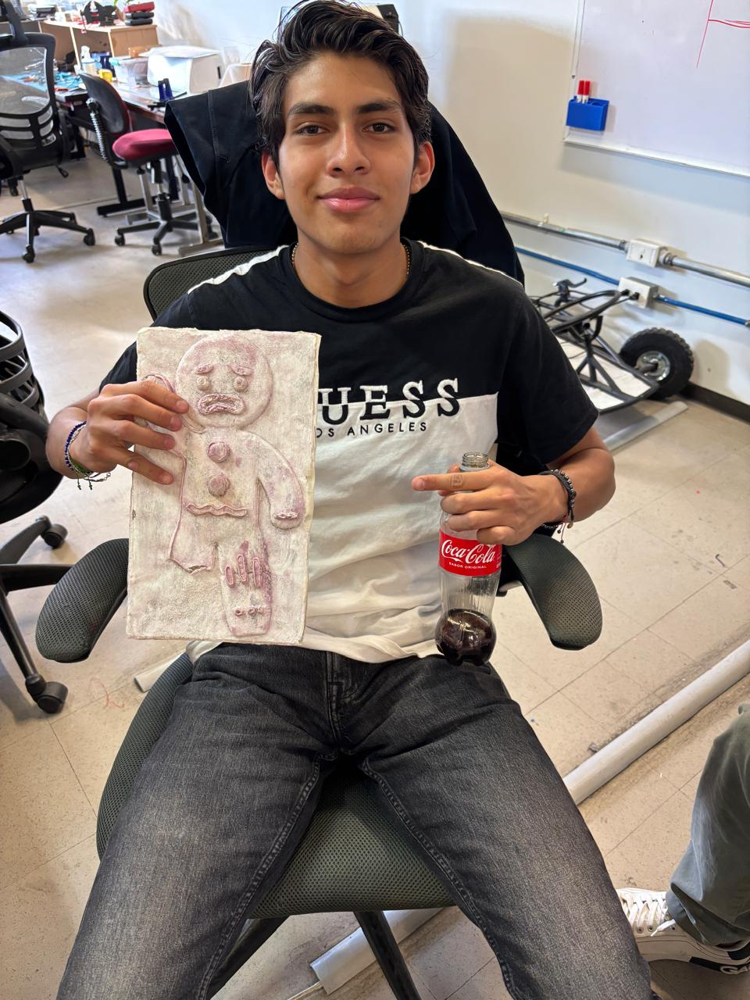
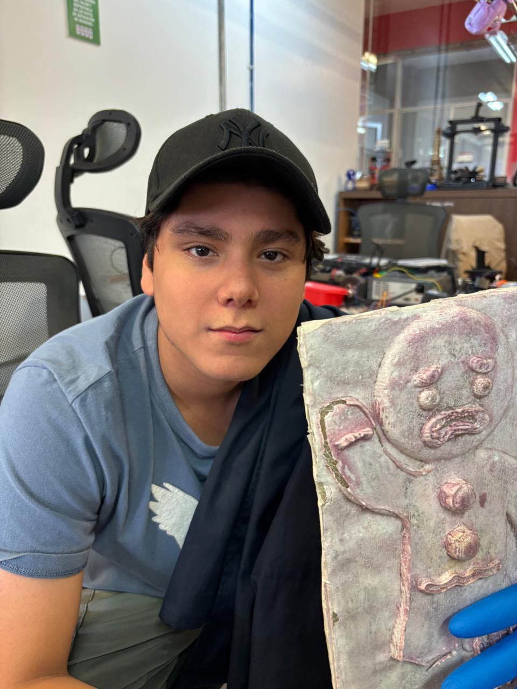
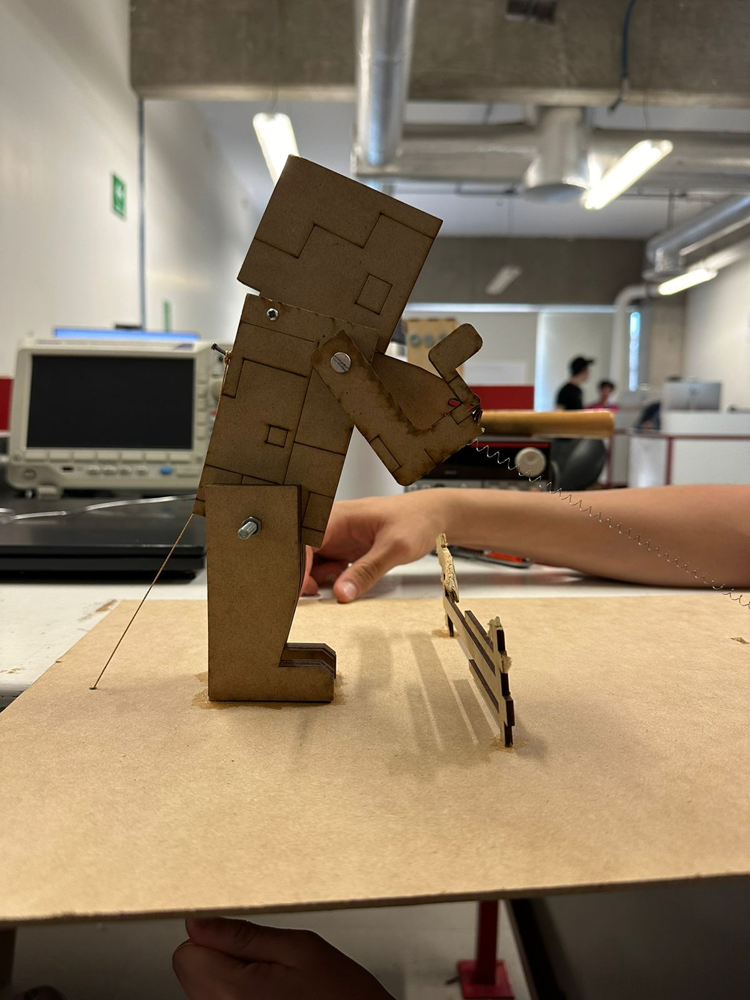

Trabajos
Descripción en equipo .
Arduino 0
Para este arduino realizamos unos codigos y conecciones fisicas para poder ver como prende una led.
Arduino 1
En este ardino pusimos distintos codigos para que se prenda un led con botones , los cuales conectamos con el arduino que colocamos dentro de la computadora para q arranque el sistema .
Arduino 2
Esta programacion de arduino nos ayudo a poder hacer que unos cervomotores se puedan mover con unos potenciometros loas cuales nos ayudan al rango de movimiento de estos .
555
En esta práctica lo que se realizó fue el conectado de un temporizador 555 con un capacitor, potenciometro y un transitor.
GitHub
Es una pagina web creada a base de GitHub la cual cambia de una imagen a otra .
Brazo Robot
En esta práctica elaboramos, diseñamos y programamos un brazo robótico en base de ARDUINO UNO y un armado con servomotores y potenciometros.
3D
La práctica de impresión 3D se basó en el diseño de un FIDGET en SOLIDWORKS para posteriormente imprimirlo.
Ensamble
En la práctica de ENSAMBLE lo que hicimos fue diseñar un prototipo en SOLIDWORKS y posteriormente cortarlo a láser..
Molde
En este trabajo realizamos un molde de cera con la figura del personaje "Ghostface"..
Fibra de Vidrio
en esta practica se realizo barios pasos para lograr el objetivo...
Temas
Trabajos realizados.


Proyectos fisicos
Especificaciones protos y arduinos .
-
Protoboard 555
datasheet 555
se realizo un una protoboar la cual podemos ocupar dar los pulsos con gran precision.
realizacion pagina web
via github
esta es una pagina sencilla que se realizo para el
arduino basico
En este tema se realizo una verficacion y prueba de funcionamiesnto de arduino la cual nos ayudo a encender un solo led.
Arduino 1
leds y botones
En esta practica se realizo el encendido y apagado de led pero con botones.
Arduino 2
En esta practica se realizo variedad de codigos los cuales moveran los servo motores.
Brazo Robot
En esta practica realizamos que el brazo robot se moviera con los servomotores.
3D
En esta practica hicimos un cubo anti estres infinito .
Ensable
En esta practica se diseño unas piezas para despues hacer un ensamble .
Molde
En esta prectica se realizo un dibujo que despues se realizo en un bloque de cera para despues hacer el molde .
Be Part
Of Our
Story!Nuestro Equipo
Integrantes.

Uriel Bermudez Ruiz
Diamon Black
Mia Castillo Noriel
The Black Girl

Andres Arenas Montañez
The Boy Deluxs
Somos dos grandes integrantes los cuales buscamos con esta pagina web enseñar de manera clara y presisa como realizar las practicas que se mencionan dentro los TEMAS.


Contact Us
  

 
